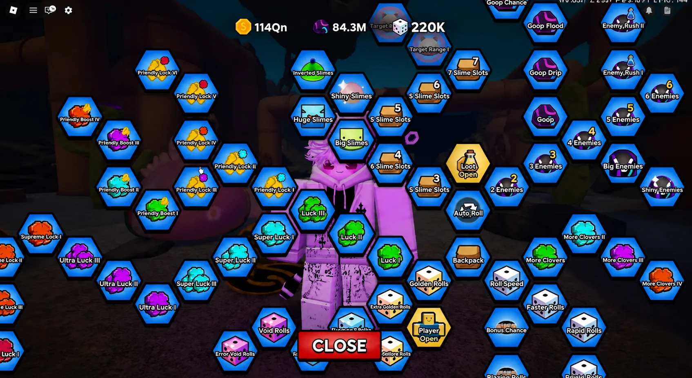
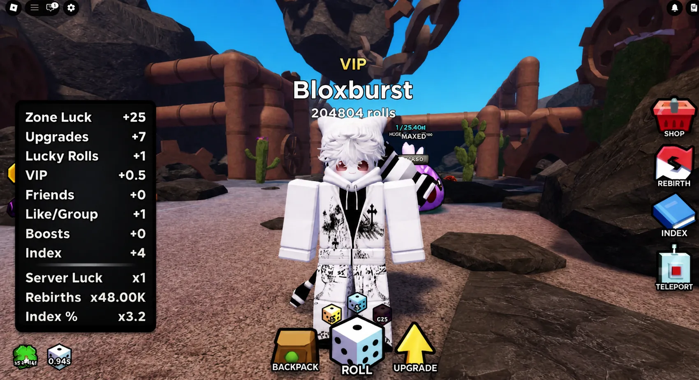
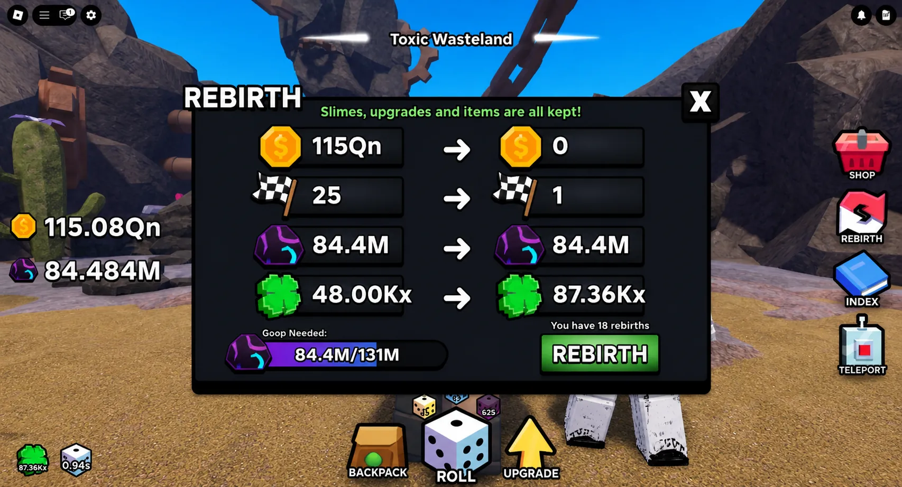
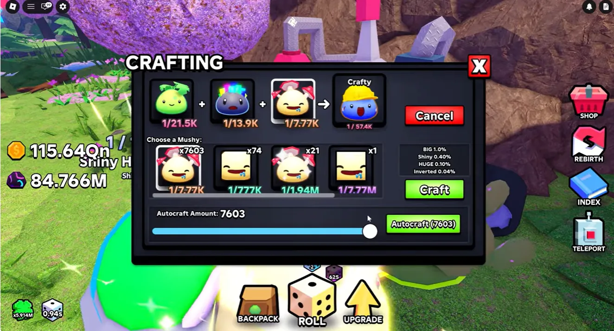

How to get more rare Slimes in Slime RNG! (2026)


Slime RNG might appear deceptively simple — roll dice, collect slimes, repeat — but beneath its colorful surface lies a deeply strategic progression system where luck optimization, rebirth timing, and resource management separate casual players from leaderboard dominators. This comprehensive guide breaks down every critical mechanic, giving you a clear, actionable roadmap to maximize your luck multiplier and unlock the rarest slimes efficiently. Whether you're on your first rebirth or pushing for quadrillion-tier rolls, these strategies will accelerate your progress without relying on paid advantages.
📑 Table of Contents
Core Loop: Luck, Rolls & Collection
At its heart, Slime RNG revolves around a satisfying cycle: roll dice to generate slimes with varying rarity odds, collect them to boost your Index progress, and reinvest earnings into upgrades that compound your luck multiplier. Unlike pure idle games, success here demands active decision-making about when to roll, which upgrades to prioritize, and how to manage limited resources like Goop and special dice.
Understanding the Luck Multiplier
Your luck stat is the single most important number in Slime RNG. It directly influences the probability of rolling rare slimes — a 12 million luck multiplier doesn't just feel better than 6 million; it statistically doubles your chances of hitting high-tier rarities. Every system in the game ultimately feeds into boosting this number.
Pro Tip: Always check your total luck multiplier before using valuable dice. A small increase in luck can dramatically improve your odds on expensive rolls.
The Roll Mechanic Explained
Each roll consumes dice currency and generates a slime based on current odds. Faster roll speed doesn't improve rarity, but it accelerates currency generation since you earn dice currency from rolling itself. This creates a positive feedback loop: faster rolls → more currency → more upgrades → better luck → rarer slimes.

Figure 1: Your luck multiplier (top) directly impacts slime rarity odds. Monitor it before using valuable dice.
Friendly Luck & Social Play Strategy
One of the most overlooked yet impactful systems in Slime RNG is Friendly Luck — upgrades that grant multiplicative bonuses when playing with others. Ignoring this system means leaving massive luck gains on the table, often doubling your effective multiplier with minimal effort.
Why Friendly Luck Upgrades Come First
Early-game Friendly Luck upgrades are significantly cheaper than standard luck upgrades, yet they provide compounding returns. Prioritize these before sinking coins into generic luck stats. The ROI difference is substantial: spending 1M coins on Friendly Luck might grant +500K effective luck with friends, while the same coins on base luck might only yield +100K.
Building Your Lucky Squad
You don't need a full server of friends to benefit. Even 2-3 active players in your VIP server can trigger meaningful bonuses. Join the official Slime RNG Discord or community hubs to find reliable farming partners. Pro players often maintain dedicated farming groups for consistent luck stacking.
Server Selection Strategy
When joining public servers, look for ones with active players already present. The Friendly Luck bonus applies retroactively once you're grouped, so hopping into a populated server can instantly boost your multiplier without coordination overhead.
Common Mistake: Players often postpone Friendly Luck upgrades thinking "I'll play with friends later." This delays your luck growth curve significantly. Upgrade them early, even if playing solo temporarily.

Figure 2: Friendly Luck upgrades provide multiplicative bonuses. Prioritize these early for exponential luck growth.
Rebirth Timing & Goop Management
Rebirthing is Slime RNG's core progression reset mechanic — but timing it incorrectly can waste hours of progress. Understanding the interplay between Goop (persistent currency), luck multipliers, and zone unlocks is essential for efficient resets.
Goop: The Currency That Doesn't Reset
Unlike coins and zone progress, Goop persists through rebirths. This makes it your strategic reserve currency. Before rebirthing, aim to accumulate enough Goop to immediately purchase key upgrades post-reset, minimizing downtime. A common benchmark: save enough for at least 2-3 major upgrades before resetting.
When to Rebirth: The Multiplier Threshold
Early game (rebirths 1-10): Rebirth as soon as you unlock the option. The luck multiplier gain outweighs minor coin losses.
Mid game (rebirths 10-25): Wait until you can afford a meaningful Goop buffer or unlock a new zone that grants bonus luck.
Late game (rebirths 25+): Optimize for luck multiplier milestones (e.g., rebirth when you'll hit 100K+ multiplier).
Zone Unlock Strategy
Unlocking new zones grants permanent luck bonuses. Sometimes it's worth delaying a rebirth to reach the next zone threshold. Calculate: if reaching Zone X grants +5% luck and takes 10 minutes of farming, but rebirthing now gives +10% multiplier instantly, rebirth immediately. Use this decision framework for every reset.
AFK Optimization: Before logging off, ensure you're in a high-coin zone with maxed roll speed. This maximizes Goop accumulation while idle, setting up your next rebirth cycle.

Figure 3: Rebirth menu displaying your next luck multiplier gain. Save Goop before resetting to minimize post-rebirth downtime.
Dice Upgrade Prioritization Framework
With limited dice currency, choosing which upgrades to purchase first can make or break your progression speed. This framework helps you allocate resources optimally at every game stage.
Early Game Priority: Roll Speed First
When starting out, prioritize faster roll speed above all else. Why? Because dice currency is earned by rolling. Faster rolls = more currency per minute = faster upgrade acquisition. This creates a snowball effect that accelerates all other progress.
Mid-Game Balance: Bonus Chance & Extra Rolls
Once roll speed feels comfortable (sub-2 second rolls), shift focus to bonus chance and extra rolls. These upgrades increase the value of each roll session, making your currency generation more efficient. Aim for a 60/30/10 split: 60% roll speed, 30% bonus chance, 10% extra rolls.
Late Game Optimization: Clover Upgrades
Endgame players should max clover upgrades last. While powerful, their high cost means they're only efficient once your base systems are fully optimized. Save these for when you have surplus dice currency and are pushing for leaderboard-tier rarities.
Avoid This Trap: Don't evenly distribute dice currency across all upgrades early on. Focused investment in roll speed yields faster compounding returns than balanced spending.
Buff Dice Strategy: Save for Late Game
Special dice like Big Dice, Golden Dice, Diamond Dice, Void Dice, and especially Jackpot Spins are extremely valuable resources. Using them prematurely is one of the most common progression mistakes in Slime RNG.
Why Saving Beats Instant Gratification
Buff dice don't guarantee rare slimes — they improve your odds based on your current luck multiplier. Using a Jackpot Spin at 1M luck might yield a 1-in-10,000 slime. Using that same spin at 100M luck could yield a 1-in-10-billion rarity. The dice didn't change; your luck multiplier did.
Strategic Dice Inventory Management
Maintain a mental (or actual) inventory of your special dice. Set milestone targets: "I'll use my first Jackpot Spin when I hit 50M luck." This prevents impulse usage and ensures maximum value extraction. Track your dice count in a notes app if needed.
The Jackpot Spin Exception
Jackpot Spins are exceptionally rare and valuable (~300 Robux equivalent). Never use these casually. Save them for: (1) major luck multiplier milestones, (2) limited-time events with boosted odds, or (3) when pushing for a specific leaderboard slime. Wasting these is effectively discarding significant real-world value.
Pro Strategy: When you finally use a saved buff dice, stack it with active luck potions and ensure you're in a high-luck server. This triple-stacking maximizes your rarity potential for that single roll.
Index System & Autocraft Mastery
The Index isn't just a collection tracker — it's a permanent luck multiplier engine. Every slime you catalog grants incremental bonuses, and craftable slimes offer guaranteed progression paths that bypass pure RNG.
Index Rewards: The Hidden Luck Engine
Each completed Index slot grants a permanent luck multiplier. Collecting all 8 craftable slimes alone can provide ~25% total luck increase. For context: a player with 1M base luck could reach 1.25M just from Index completion — no rolls required. This compounds with all other luck sources.
Autocrafting: Your Passive Progression Tool
The Cherry Grove Crafting Station's autocraft feature revolutionizes slime collection. Instead of manually clicking thousands of times, set autocraft for high-volume common slimes. Even with low individual odds (e.g., 1-in-2,500 for Inverted variants), mass crafting guarantees eventual success through volume.
Crafting Priority Framework
- Start with common craftables: Build volume quickly to unlock Index slots
- Target one rare variant per slime type: Don't chase all variants simultaneously
- Save resources for event craftables: Limited-time slimes often grant bonus Index value
- Reinvest Index luck gains immediately: Use the multiplier boost to accelerate further collection

Figure 4: Autocrafting at Cherry Grove lets you mass-produce slimes for Index completion. Set it before logging off for passive progress.
💡 Honorable Mention: Server Luck Boosts
Server Luck Boosts are premium features that multiply all players' luck in a server (2x, 4x, even 1000x+). While undeniably powerful for leaderboard pushing, they require significant Robux investment. Important perspective: You can absolutely achieve top-tier results without them — many high-ranking players never use boosts. If you choose to utilize them, coordinate with your farming group to maximize value. But remember: consistent strategy beats paid advantages long-term. Focus on mastering the free systems first.